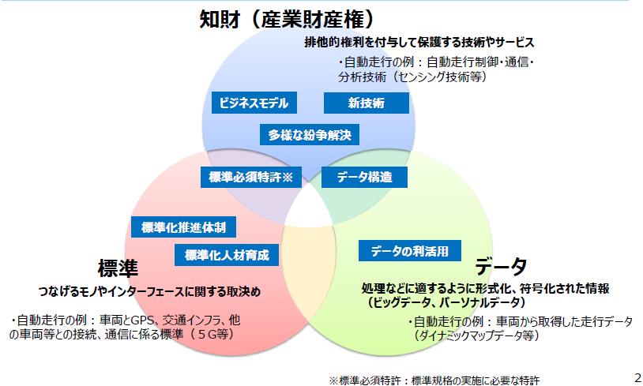
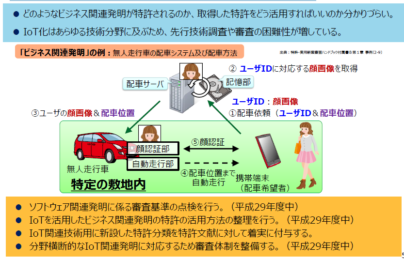
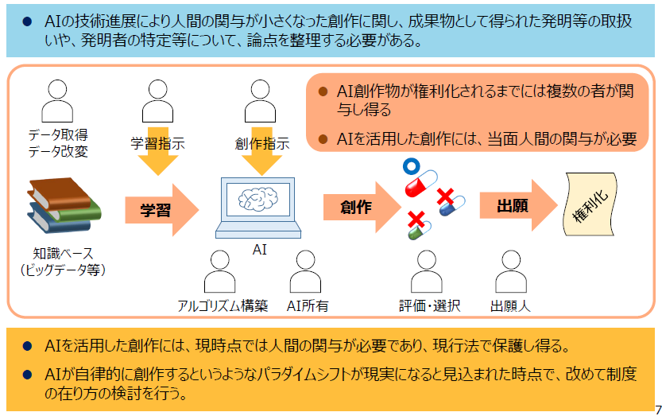
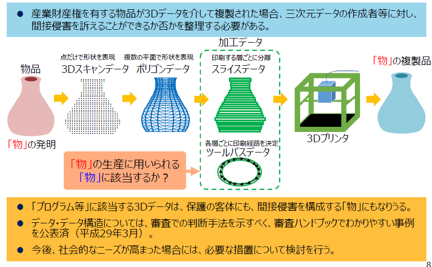
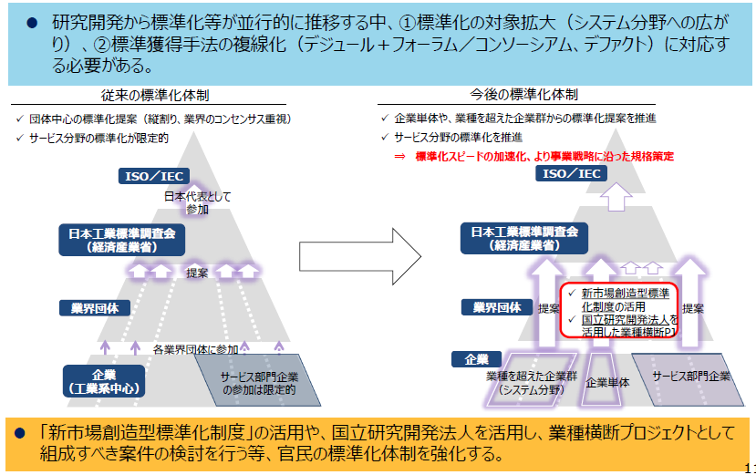
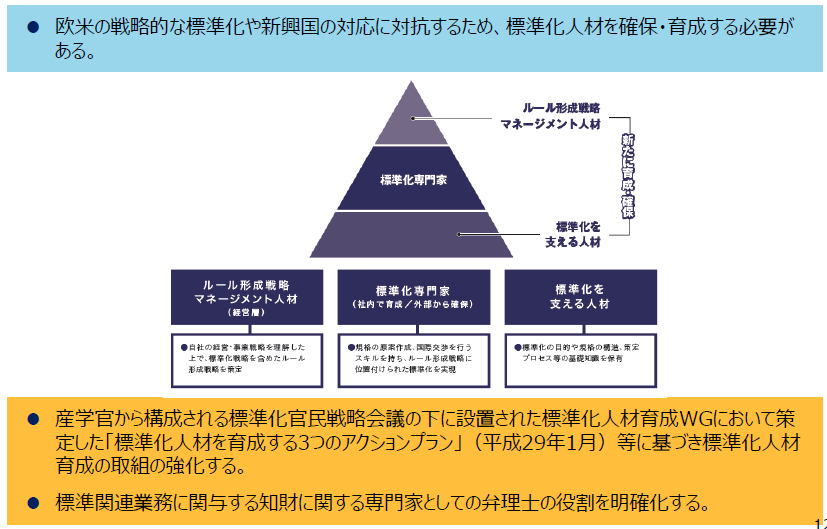
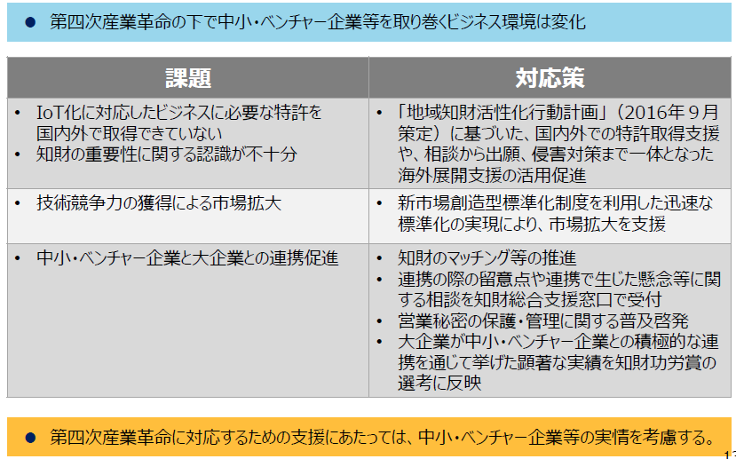

-
- （検討会報告書概要）
- １．（１）第四次産業革命と知財システムを取り巻く環境
- これまで
- 「モノ」に関する技術が競争力の源泉
- 多数存在する同業他社間での競争を通じて自前技術を確立し国際競争力を確保
- 「知財」として独占することと市場を広げる「標準」化を組み合わせたオープン＆クローズ戦略を推進
- 現在
- IoT、AI及びビックデータに代表される技術革新が進展
- 「データ」及びその「分析技術」、それらを活かした「ビジネスモデル」が新たな競争力の源泉に
- 様々なつながりにより新たな付加価値が創出される産業社会“Connected Industries” が到来
- オープン・イノベーションを通じて利益の獲得やビジネスを拡大することが求められている
- これから
- オープン＆クローズ戦略の対象の拡大・深化が必要
- 「知財」及び「標準」に「データ」を加えた三次元的な複合戦略が必要

- １．（２）第四次産業革命と知財システムを取り巻く環境
- 知財、データ、標準の三次元的な複合戦略及び検討対象項目
- 
- ２．データの利活用
- データ利活用に関しては、一定の法的基盤が整備されつつある
- 一方で、データを不正な利用から保護する仕組みが十分でない
- データの利活用やアクセスに関する権限は法的な位置付けが明確でなく契約に委ねられている
- 不正競争防止法等におけるデータの保護
- 不正競争防止法の改正を視野に入れ検討する
- （検討例）
- データの不正取得の禁止
- データに施される暗号化技術等の保護強化
- 営業秘密としているデータ分析方法等に係る民事訴訟の負担軽減（政令）
- （産業構造審議会「営業秘密の保護・活用に関する小委員会」において検討中、今春を目途に方向性のとりまとめ。）
- 情報のデジタル化を踏まえ、営業秘密管理指針・秘密情報の保護ハンドブックの記載を充実させる
- 利用権限に関する契約
- データの利用権限に関するガイドライン等の策定を行うための検討を行う
- （検討内容）
- 企業間におけるデータの利活用や契約の実態に即した、保護の在り方や契約等のルールについて
- ３．（１）産業財産権システム～「データ」・「サービス」等への対応～
- 今後のイノベーションにより、新たなデータ構造の創出が想定される
- IoTが普及する中、サービスとモノが結びついたビジネス関連発明の特許出願が増加している
- これら新たな競争力の源泉は、どのような要件を備えれば権利化できるのか、分かりづらい
- AI、３Dプリンティング、ネットワーク化等に関する技術の進展により、新たな課題も生じている
- データ構造の取扱いの明確化
- 特許の対象となるデータ構造の事例を公表（平成29年3月）
- 今後とも、予見性を高める取組を継続
- IoTを活用したビジネスモデルを支える知財
- 特許を着実に取得し活用するための環境を整備（平成29年度中）
- （具体例）
- ソフトウェア関連発明の審査基準の点検
- ビジネス関連特許の活用方法の整理
- 新設した特許分類の活用
- 分野横断的な審査体制の整備
- 新技術への対応
- 国境をまたいだ侵害行為に対する権利保護（裁判例の蓄積等を注視しつつ、引き続き検討）
- 将来的なAIによる発明等の産業財産権上の取扱い（現時点では、現行法で保護。今後の動向を注視）
- 3Dプリンティング用データの産業財産権上の取扱い（現時点では、現行法で保護。今後の動向を注視）
- ３．（２）産業財産権システム～特許紛争の解決～
- IoTの普及に伴い、企業間の連携が増加する中、知財の管理コストが増大するおそれ
- 米国では、パテント・トロール※１による濫用的な権利行使が社会問題化
- つなげる社会インフラの一部を構成する規格については、その実施に必要な特許をめぐる紛争が多発・長期化すれば、経済・産業に悪影響が及ぶおそれ
- 特に、中小・ベンチャー企業は、交渉や訴訟への対応に当たり困難に直面する可能性
- 標準必須特許に係る裁定制度の導入（標準必須特許）
- 標準必須特許をめぐる紛争を対象とし、行政が適正なライセンス料を決定するADR※２制度（標準必須特許裁定）の導入を検討
- 平成30年の特許法改正を目指し、検討を進める
- 紛争の早期解決に資するあっせん制度の検討（多様な紛争解決）
- ライセンス契約や特許権侵害紛争を対象とし、中小企業等が使いやすいADR制度（あっせん）について、検討
- 民間ADR（日本知的財産仲裁センター等）との関係を整理した上で、制度設計を検討
- 用語
- ※１パテント・トロール：ライセンス料や高額な和解金を得ることを目的とした権利行使をビジネスとする者
- ※２ADR（Alternative Dispute Resolution）：調停、あっせん等の、裁判以外の方法による紛争解決手段
- ４．国際標準化を推進するための体制・人材育成
- ハード分野のみならず、ソフト分野を含めた国際標準化を迅速に行うことの重要性が増加
- 標準化活動の中心は、デジュール※１からフォーラム／コンソーシアム※２へ変化
- 研究開発やビジネスの検討段階から、標準化活動を行わないと他国にスピードで追いつかない
- 領域融合的な分野では、従来の特定の工業会を主体とした標準化の取組が困難化
- 標準化体制の整備不足や国際標準化を支える人材の質的・量的に不足
- 各種ツールを活用した業種横断テーマの推進（標準化推進体制）
- 官民の標準化体制を強化
- （具体例）
- •「新市場創造型標準化制度」※３の活用
- •国立研究開発法人の更なる活用による業種横断プロジェクト組成の検討
- （ドイツ等と連携したスマートマニュファクチャリング分野の国際標準化等）
- 標準化人材育成の取組の強化（標準化人材育成）
- 「標準化人材を育成する３つのアクションプラン」※４等に基づき標準化人材を育成
- （具体例）
- 経営層の標準化に対する理解の深化
- 最高標準化責任者（CSO：Chief Standardization Officer）の設置
- 政府によるルール形成戦略に関する情報の収集体制を強化等
- 標準関連業務に関与する知財に関する専門家としての弁理士の役割を明確化
- 用語
- ※１デジュール標準：公的な機関で明文化され公開された手続により作成された規格
- ※２コンソーシアム／フォーラム標準：特定分野に関心のある企業等が集まり、合意により作成された規格
- ※３国内における業界団体を通じたコンセンサスを求めない規格化の仕組み
- ※４産官学から構成される「標準化官民戦略会議」の下の標準化人材WGにおいて、平成29年１月に本プランを策定
- ５．個別産業分野及び中小・ベンチャー企業等の視点からの検討
- 個別産業分野で行うことが適当な取組例
- ものづくり等（ロボット分野）
- エッジコンピューティング※等のビジネスモデルを意識した知財ポートフォリオの構築
- 工場のネットワーク化のためのデータフォーマットの国際標準化の推進など
- モビリティ（自動車分野）
- 車両データ等の第三者による不正利用に対する保護のルール作り
- 商習慣の異なるIT業界による特許の動向を踏まえた、知財戦略の構築など
- 健康・医療・介護（医療・介護及びバイオ分野）
- 医療技術に関する事業者間のデータの保護のルール作り
- 臨床データ等の取得方法やその保存のためのデータフォーマットの国際標準化の推進など
- 中小企業等の支援の観点から行うことが適当な取組例
- 「地域知財活性化行動計画」（平成28年９月策定）に基づく、国内外での特許取得や海外展開の支援
- 「新市場創造型標準化制度」を利用した迅速な標準化による市場拡大の支援
- 大企業と中小・ベンチャー企業との連携の促進
- 用語
- ※エッジコンピューティング：デバイス側に高度な情報処理機能を持たせ一定の処理を分散的に行わせることで、通信環境に左右されることなく大量のデータを処理する情報処理形態。
- （検討項目詳細等）
- ＩｏＴ俯瞰図（データ、産業財産権、標準の絡み合い）
- 不正競争防止法等におけるデータ保護の在り方
- 利用権限に関する契約の在り方
- データの取扱いに関しては、他者とデータを融通し合う商慣行や取決めが根付いておらず、契約当事者間でのデータを巡る権利関係の整理・明確化も必ずしも進んでいない。

- 企業間におけるデータの利活用や契約の実態に即した、保護の在り方や契約等のルールについて検討し、ガイドライン等を策定する。
- 産業財産権の対象としてのデータの取扱いの明確化
- 構造を有するデータについては、特許の対象となり得るが、具体的にどのような構造を備えれば特
許の対象となるのか、分かりづらい。 
- 審査での判断手法を示すべく、審査ハンドブックでわかりやすい事例を公表済（平成29年3月）。
- 今後も権利取得の予見性を高める取組を行う。
- IoTを活用したビジネスモデルを支える知財システムの在り方
- どのようなビジネス関連発明が特許されるのか、取得した特許をどう活用すればいいのか分かりづらい。
- IoT化はあらゆる技術分野に及ぶため、先行技術調査や審査の困難性が増している。
- 
- ソフトウェア関連発明に係る審査基準の点検を行う。（平成29年度中）
- IoTを活用したビジネス関連発明の特許の活用方法の整理を行う。（平成29年度中）
- IoT関連技術用に新設した特許分類を特許文献に対して着実に付与する。
- 分野横断的なIoT関連発明に対応するため審査体制を整備する。（平成29年度中）
- 国境をまたいだ侵害行為に対する権利保護の明確化
- 特許発明の構成要件の一部が日本国外(例国外サーバ)で実施された場合に、特許権侵害に該当しないと判断されるおそれがある。
- 厳格な属地主義にとらわれずに、特許発明の実施地が日本国内であると柔軟に解釈することが考えられる。
- 他国における法適用の状況や、今後の裁判例の蓄積等を注視しつつ、引き続き検討を行う。
- 将来的なAIによる発明等の産業財産権上の取扱いの明確化
- AIの技術進展により人間の関与が小さくなった創作に関し、成果物として得られた発明等の取扱いや、発明者の特定等について、論点を整理する必要がある。
- 
- AIを活用した創作には、現時点では人間の関与が必要であり、現行法で保護し得る。
- AIが自律的に創作するというようなパラダイムシフトが現実になると見込まれた時点で、改めて制度の在り方の検討を行う。
- 3Dプリンティング用データの産業財産権上の取扱いの明確化
- 産業財産権を有する物品が3Dデータを介して複製された場合、三次元データの作成者等に対し、間接侵害を訴えることができるか否かを整理する必要がある。
- 
- 「プログラム等」に該当する3Dデータは、保護の客体にも、間接侵害を構成する「物」にもなりうる。
- データ・データ構造については、審査での判断手法を示すべく、審査ハンドブックでわかりやすい事例を公表済（平成29年3月）。
- 今後、社会的なニーズが高まった場合には、必要な措置について検討を行う。
- 標準必須特許を始めとする多様な特許紛争の迅速・簡便な解決①
- IoTの普及に伴い、様々なつながりが増加する中、知財（特に情報通信技術を利用する分野）の管理コストが増大するおそれ。米国では、パテント・トロール※による濫用的な権利行使が社会問題化
- つなげる社会インフラの一部を構成する規格について、その実施に必要な特許をめぐる紛争が多発・長期化すれば、経済・産業に悪影響が及ぶおそれ
- 標準必須特許をめぐる紛争を対象とし、行政が適正なライセンス料を決定するADR※制度（標準必須特許裁定）の導入を検討
- 標準必須特許を始めとする多様な特許紛争の迅速・簡便な解決②
- IoTの普及に伴い、中小・ベンチャー企業を含む多様な企業間の連携が増加する中、知財の管理コストが増大するおそれ
- 特に、中小・ベンチャー企業は、交渉や訴訟への対応に当たり困難に直面する可能性

- ライセンス契約や特許権侵害紛争を対象とし、中小企業等が使いやすいADR※制度（あっせん）について、民間ADR（日本知的財産仲裁センター等）との関係を整理した上で、制度設計を検討。
- 新市場創造型標準化制度や国立研究開発法人を活用した業種横断プロジェクトの推進
- 研究開発から標準化等が並行的に推移する中、①標準化の対象拡大（システム分野への広がり）、②標準獲得手法の複線化（デジュール＋フォーラム／コンソーシアム、デファクト）に対応する必要がある。
- 
- 「新市場創造型標準化制度」の活用や、国立研究開発法人を活用し、業種横断プロジェクトとして組成すべき案件の検討を行う等、官民の標準化体制を強化する。
- 国際標準化を推進するための体制・人材育成の在り方
- 欧米の戦略的な標準化や新興国の対応に対抗するため、標準化人材を確保・育成する必要がある。
- 
- 産学官から構成される標準化官民戦略会議の下に設置された標準化人材育成WGにおいて策定した「標準化人材を育成する3つのアクションプラン」（平成29年1月）等に基づき標準化人材育成の取組の強化する。
- 標準関連業務に関与する知財に関する専門家としての弁理士の役割を明確化する。
- 中小・ベンチャー企業等における今後の対応
- 
- 第四次産業革命の下で中小・ベンチャー企業等を取り巻くビジネス環境は変化
- 課題と対応策
- IoT化に対応したビジネスに必要な特許を国内外で取得できていない。知財の重要性に関する認識が不十分
- 「地域知財活性化行動計画」（2016年９月策定）に基づいた、国内外での特許取得支援や、相談から出願、侵害対策まで一体となった海外展開支援の活用促進
- 技術競争力の獲得による市場拡大
- 新市場創造型標準化制度を利用した迅速な標準化の実現により、市場拡大を支援
- 中小・ベンチャー企業と大企業との連携促進
- 知財のマッチング等の推進
- 連携の際の留意点や連携で生じた懸念等に関する相談を知財総合支援窓口で受付
- 営業秘密の保護・管理に関する普及啓発
- 大企業が中小・ベンチャー企業との積極的な連携を通じて挙げた顕著な実績を知財功労賞の選考に反映
- 第四次産業革命に対応するための支援にあたっては、中小・ベンチャー企業等の実情を考慮する。